Proyecto Solista — 2026
INICIA
TANKBOY y DUBERLY
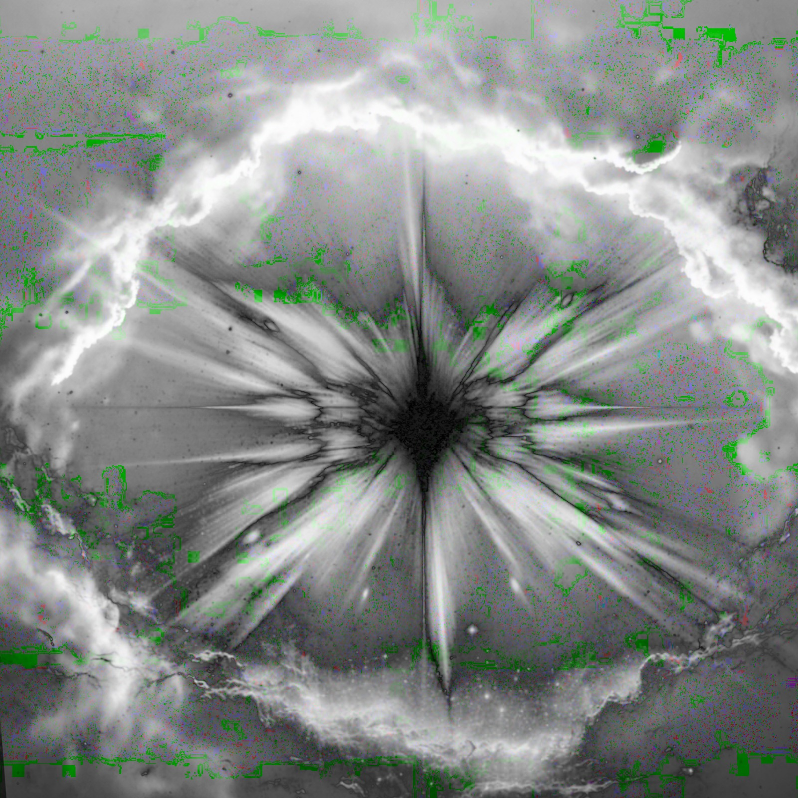
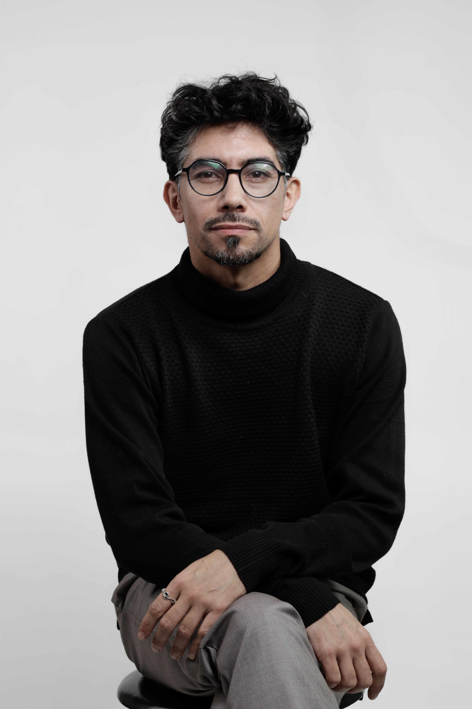
DUBERLY es músico, artista e investigador, nacido en Quillota y radicado en Valparaíso. Su práctica parte de la voz y se expande hacia la canción, la creación sonora, la escritura y la mediación artística.
Su creación musical se despliega en distintos formatos: el proyecto solista DUBERLY, su trabajo como vocalista y director artístico del Ensamble Folk, y las experiencias colaborativas que impulsa desde diversos espacios.
Estos proyectos forman ecosistemas colaborativos: tramas en las que personas, saberes, lenguajes y territorios se encuentran y se transforman. Como un micelio, cada experiencia establece conexiones, activa nuevos procesos y continúa creciendo más allá de su momento de realización.
Actualmente desarrolla una investigación doctoral sobre la mediación artística como práctica de creación y producción de conocimiento.
Canción, voz, creación sonora y obras nacidas del diálogo con otros lenguajes y territorios.
Experiencias artísticas que conectan comunidades, aprendizaje, música en vivo y creación colectiva.
Investigación-creación sobre mediación artística, conocimiento situado y ecosistemas colaborativos.
Poesía, crónica, narrativa y escritura académica como extensiones de una misma práctica artística.
La práctica artística de DUBERLY nace en la voz y se desplaza entre la canción, el paisaje sonoro, la escritura y la experiencia colectiva. Cada proyecto abre un ecosistema distinto: la identidad solista, la creación compartida del Ensamble Folk y las exploraciones que conectan escucha, territorio y memoria.
DUBERLY es su proyecto musical solista: un espacio donde la canción convive con la experimentación vocal, las texturas acústicas y electrónicas, la poesía y la imagen. En 2026 publicó INICIA, junto a TANKBOY, y SOLO VOCAL. Actualmente desarrolla su primer álbum solista.
Desplazar para recorrer los proyectos →
TANKBOY y DUBERLY

DUBERLY
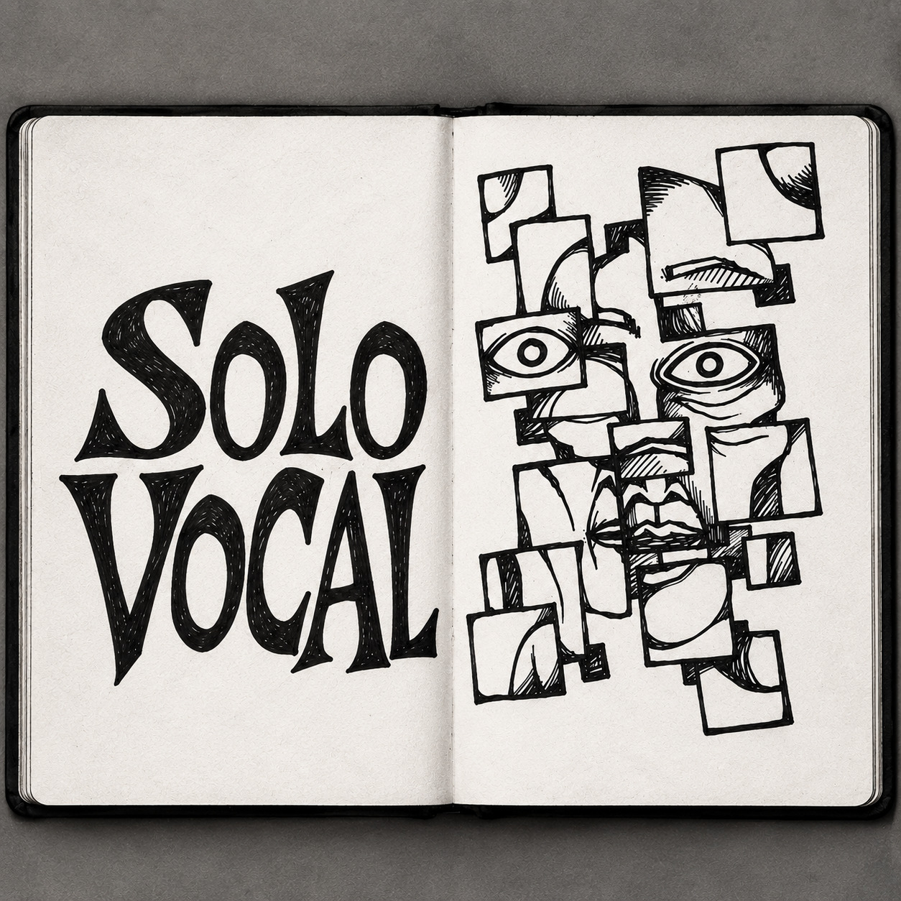
Reúne sus lanzamientos y las distintas etapas de una obra solista todavía en expansión.
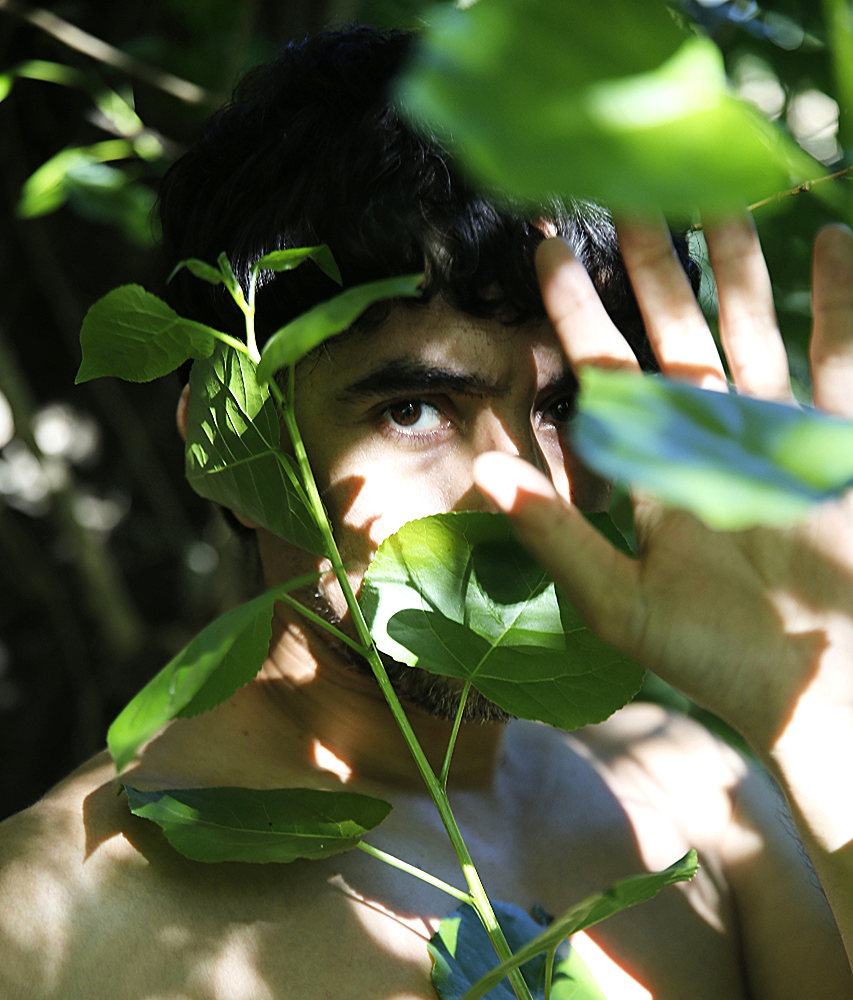
Un recorrido por su voz a través del proyecto solista, el Ensamble Folk y otras colaboraciones: distintos contextos unidos por una misma materia vocal.
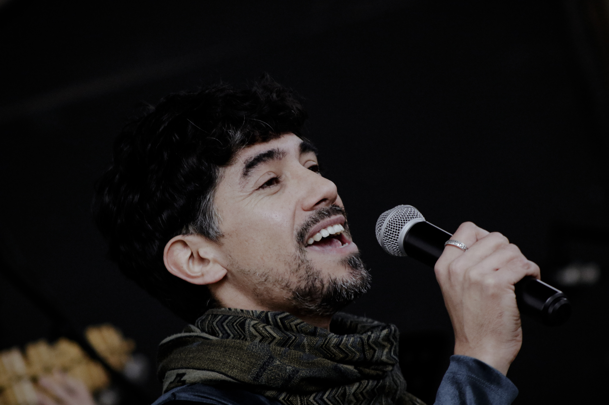
DUBERLY es vocalista y director artístico del Ensamble Folk, una práctica colectiva donde interpretación, dirección escénica, arreglos y circulación internacional se alimentan mutuamente. Sus producciones —Vivo, Vol. I, Vol. II y Cartografía Sonora Latinoamericana— registran un recorrido compartido por Chile, India, Japón, Corea del Sur y Europa entre 2016 y 2025.
Desplazar para recorrer los proyectos →
Un mapa musical construido desde repertorios, paisajes y vínculos latinoamericanos.
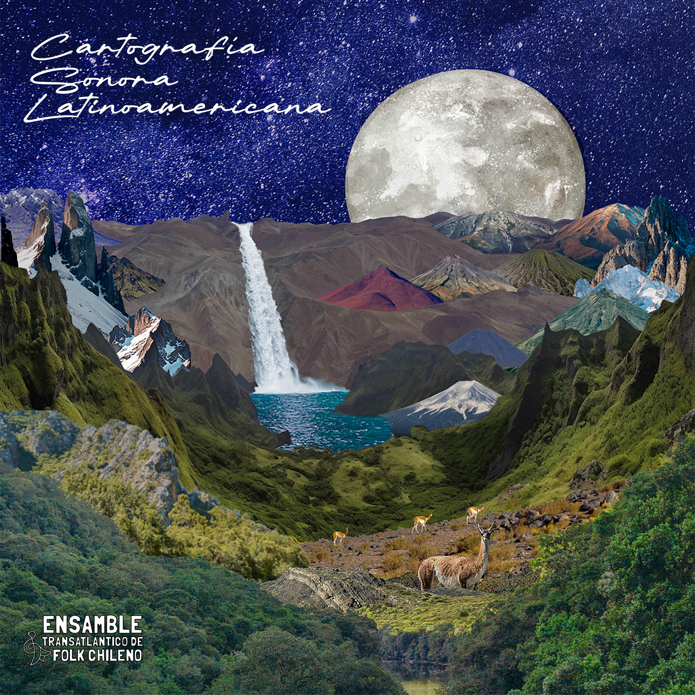
Una pieza del Ensamble Folk donde territorio, materia y memoria entran en resonancia.
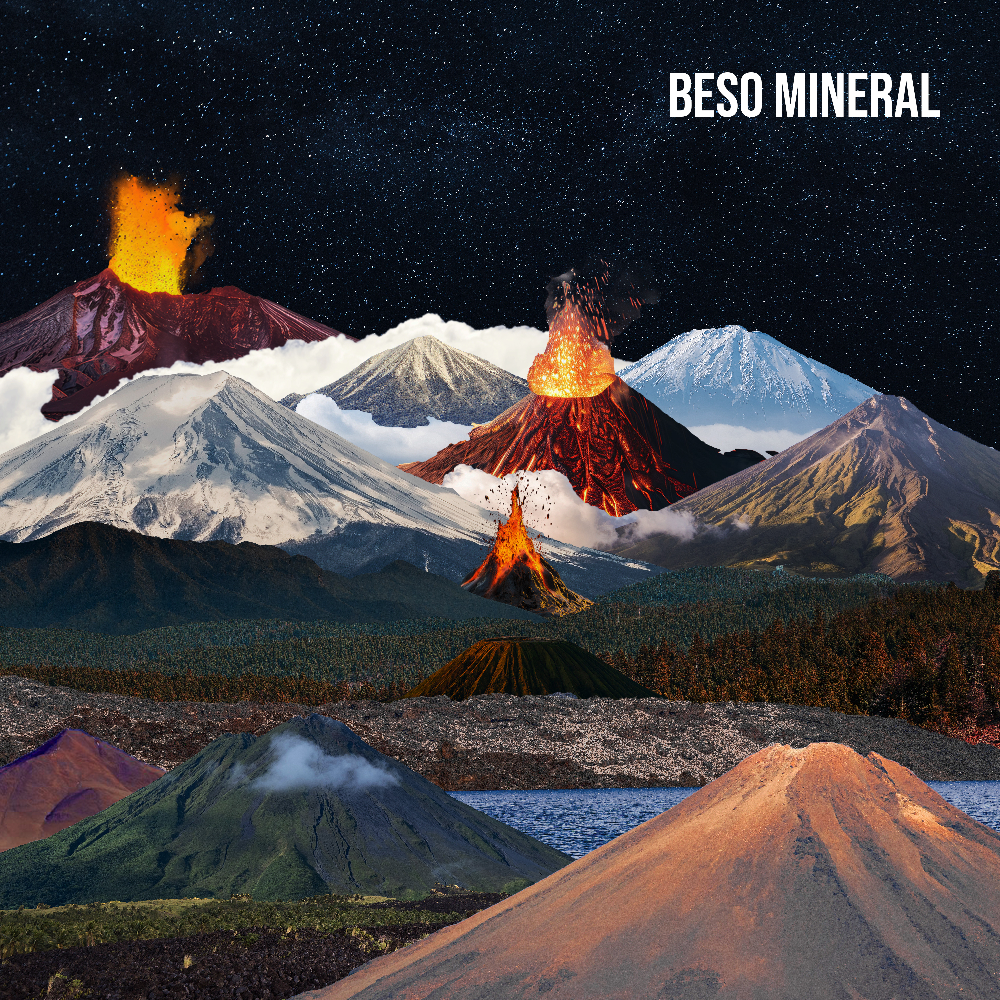
El archivo sonoro del Ensamble Folk reúne años de creación colectiva, viajes, encuentros y repertorios transformados por quienes los interpretan.
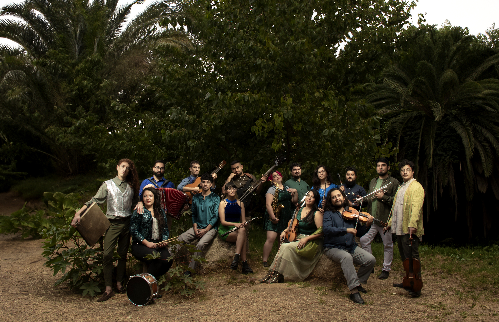
Videoclips, presentaciones en vivo, registros de giras y experiencias artísticas del Ensamble Folk.
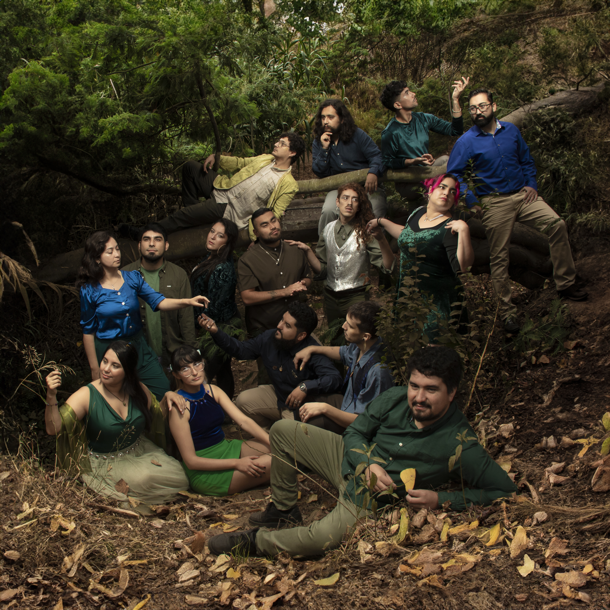
Proyectos donde la escucha funciona como una manera de recorrer, registrar y volver a imaginar el territorio.
Desplazar para recorrer los proyectos →
Una escucha del río Aconcagua y de las transformaciones territoriales y ecológicas que atraviesan su recorrido.
Registros en vivo, procesos creativos y obras que permiten seguir las conexiones entre música, territorio y experiencia.
DUBERLY desarrolla experiencias artísticas donde la música, el aprendizaje y la participación forman un mismo proceso. Su práctica de mediación articula intérpretes, comunidades, instituciones y territorios mediante la creación compartida. Este trabajo se despliega en espacios educativos, universitarios y comunitarios; Chile Puerto Folk constituye uno de sus hitos principales y una plataforma sostenida para activar colaboraciones, experiencias escénicas y vínculos territoriales.
Conciertos educativos desarrollados desde 2020 en el contexto de la Semana de la Educación Artística, en conexión con el Parque Cultural de Valparaíso y diversos establecimientos educativos del territorio.
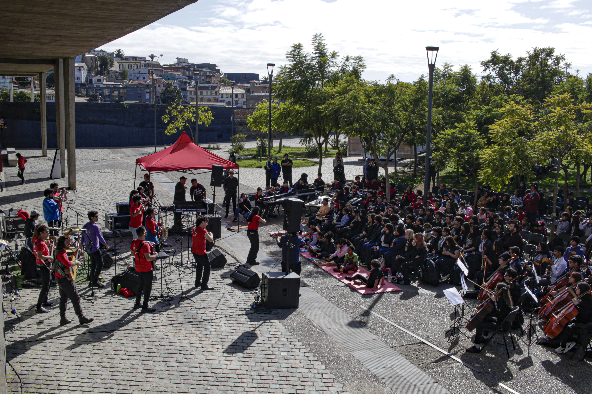
Desde 2020 desarrolla semestralmente procesos de formación vocal y creación escénica con estudiantes de la Universidad Andrés Bello. El aprendizaje basado en proyectos permite que cada grupo construya su propio montaje y convierta el aula en ensayo, escena y experiencia colectiva.
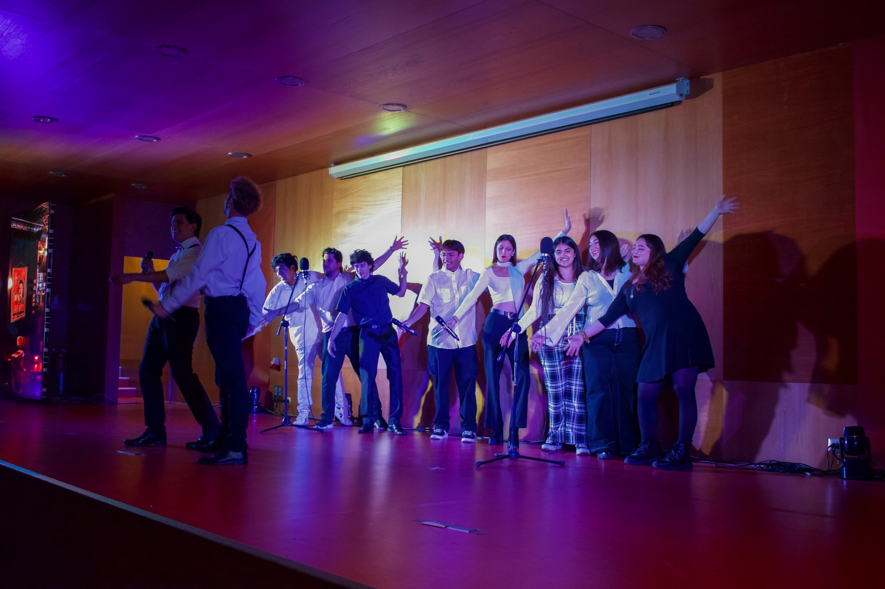
Una orquesta abierta a músicas de raíz, repertorios latinoamericanos y aprendizajes compartidos. Dentro del ecosistema Chile Puerto Folk, intérpretes con trayectorias diversas se conectan para ensayar, enseñar, aprender y producir sonido en común.
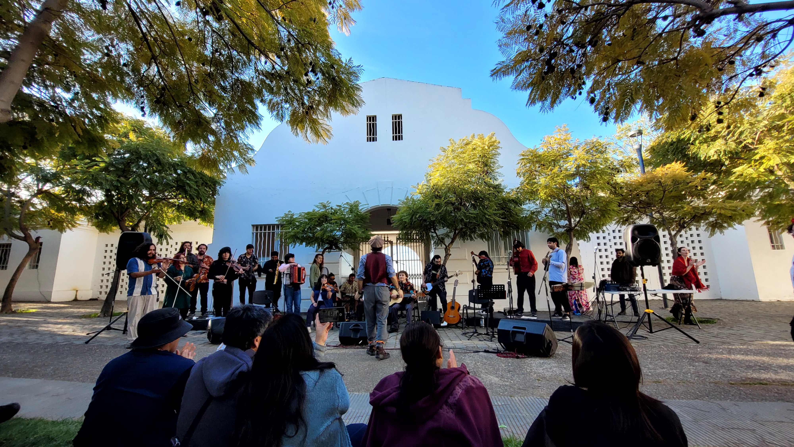
En la Escuela Comunitaria de Artes acompaña procesos musicales que conectan formación, práctica de ensamble, intervención territorial y puesta en escena. Cada presentación es la parte visible de una red cotidiana de aprendizajes, afectos y colaboración.
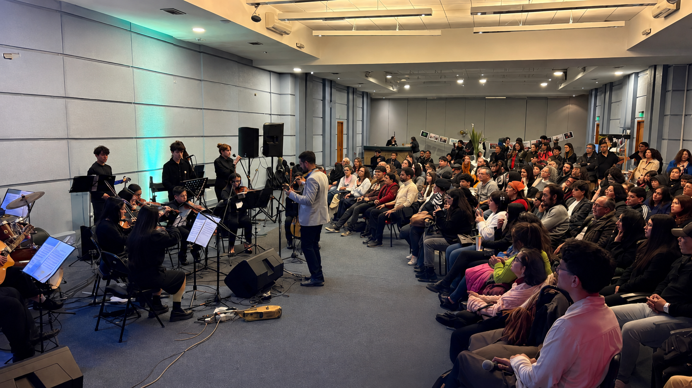
Una selección de coberturas sobre creación, mediación, circulación y trabajo colaborativo.
Desde 2024, DUBERLY desarrolla su Doctorado en Artes Integradas en la Universidad de Playa Ancha. Su investigación aborda la mediación artística como una práctica capaz de crear conocimiento desde la experiencia, los vínculos y el territorio. La imagen del micelio permite observar cómo una acción artística se conecta con otras, circula entre personas y contextos, y produce aprendizajes que desbordan la autoría individual.
Una representación experimental de las relaciones que atraviesan la investigación. Toca un nodo para observar sus conexiones o agrega una nueva relación al micelio.
Toca cualquier nodo para activar sus conexiones.
Selecciona dos elementos que para ti se relacionan. Puedes dejar además una frase breve sobre ese vínculo.

Experimento participativo público: las conexiones enviadas desde distintos dispositivos pasan a formar parte de un mismo micelio compartido. No se solicitan nombres, correos ni otros datos personales.
La escritura permite a DUBERLY registrar recorridos, reunir fragmentos y pensar aquello que la música o la imagen dejan abierto. Su producción artística y académica forma parte del mismo ecosistema: cambia de forma según el contexto y conserva preguntas sobre memoria, territorio, creación y vínculos.
Poesía, crónica y narrativa como mapas sensibles de experiencias, desplazamientos y encuentros.
Treinta y nueve poemas construyen una cartografía autobiográfica que recorre territorio, memoria, viajes, vínculos y principios de vida desde el valle del Aconcagua hacia otros lugares del planeta.
Relatos que nacen de viajes, procesos artísticos y escenas cotidianas, allí donde la memoria personal se encuentra con la experiencia compartida.
Relatos breves en los que territorio, naturaleza, imaginación y memoria abren otras formas de recorrer una experiencia.
Textos donde la práctica artística conversa con la investigación-creación, la educación y los estudios sobre mediación.
Artículos que observan prácticas artísticas, tecnologías y formas colectivas de producir y hacer circular conocimiento.
Presentaciones que ponen la investigación en conversación con comunidades académicas y artísticas, permitiendo que las ideas cambien al circular.
Escrituras desarrolladas en colaboración y diálogo con investigaciones más amplias sobre arte, memoria, educación y territorio.
Bitácoras, ensayos y documentos vinculados con el desarrollo del micelio cultural y la mediación artística como producción de conocimiento.
Una trayectoria construida entre creación musical, mediación artística, investigación y trabajo colectivo.
Duberly Saavedra Polo es músico, artista, investigador y mediador chileno. Nació en Quillota y desarrolla su práctica desde Valparaíso y Viña del Mar, conectando voz, creación sonora, escritura, educación y experiencia colectiva.
Es Licenciado en Artes, Tecnología y Gestión Musical por la Universidad de Valparaíso, Magíster en Arte y Educación por la Universidad Central y doctorando en Artes Integradas en la Universidad de Playa Ancha.
Desde 2020 ejerce docencia en la Universidad Andrés Bello. Es vocalista y director artístico del Ensamble Folk y, desde el ecosistema Chile Puerto Folk, impulsa experiencias artísticas, la Orquesta Folk y procesos de mediación en diálogo con comunidades educativas, culturales y territoriales. Su trabajo en ECAV amplía esta red mediante formación, ensambles e intervenciones artísticas.
Su trayectoria se ha tejido mediante colaboraciones y circulación por América, Asia y Europa. En cada contexto, la práctica se transforma al encontrarse con otras personas, repertorios y maneras de comprender el territorio.
Para colaboraciones, proyectos artísticos, mediaciones, investigación y circulación.
Una cartografía musical construida por el Ensamble Folk desde paisajes, repertorios y vínculos latinoamericanos.